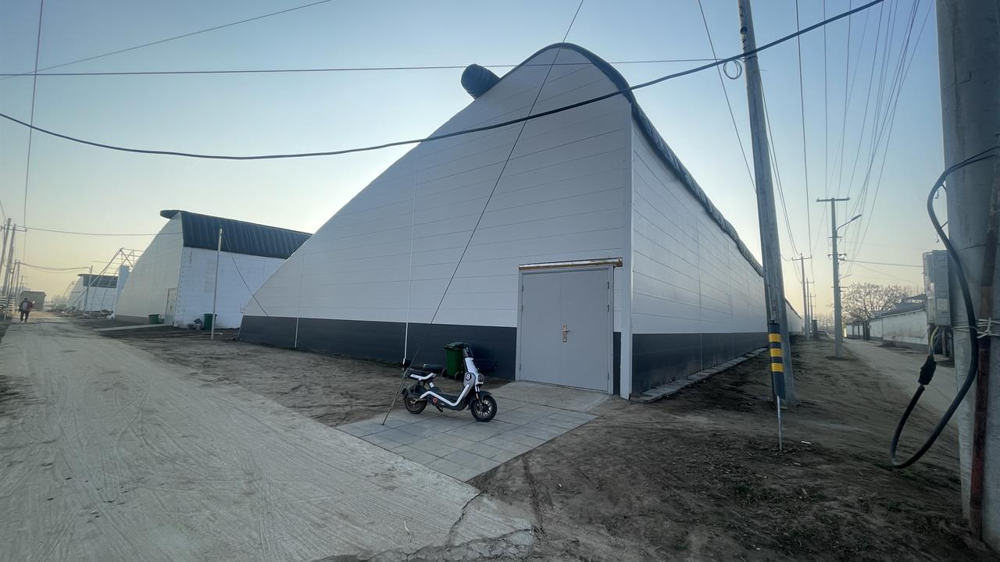

Confirm substrate line, large-wall bay rhythm, storage dryness, and rain exposure risk.
Project Evidence / Warehouse
Southeast Asia warehouse execution validation.
Rain-exposed warehouse logic for large wall fields, overlap direction, base drainage, installation rhythm, and moisture-risk inspection.
Engineering Project Logic
The system is selected for repeatable exterior wall coverage where large panel fields need controlled installation sequence, trim closure, water-shedding direction, and lower-edge drainage review.
Selection Reason
Lightweight panel workflow, repeated bay installation, trim-managed edges, and practical drainage inspection for rain-exposed projects.
Waterproof StrategyUse shingle-style overlap, visible drainage release, base outlet inspection, and cleaning after cutting.
Thermal ContinuityReview panel-field insulation separately from joints, openings, fasteners, and large wall transitions.
Installation Workflow
Install repeated panels with interlock seating before fixing.
Keep lower release paths open after panel seating and cutting cleanup.
Record base, joints, trims, and wide facade context.
Annotated Evidence
Current evidence uses real processed project and installation frames. Replace representative frames with exact warehouse project images when available.
 wall fieldv
wall fieldvRepresentative facade context for large wall field continuity.Need exact warehouse wall-run evidence.

installation bay->Workflow frame for repeated bay installation and installer coordination.
 overlap pathv!
overlap pathv!Proxy detail for overlap direction, lower drainage, and blocked-path prevention.
 cleaning zone!
cleaning zone!Use for filings, dust, and lower-trim debris risk after cutting.
Risk Prevention & Inspection
Confirm dry storage, substrate support, panel direction, trim sequence, and rainy-weather protection.
Verify overlap direction, screw-zone support, panel seating, and drainage outlet openness.
Inspect lower-edge drainage, cleaned cut debris, field alignment, and moisture-trap zones.
Primary risks are trapped moisture, blocked drainage, wrong overlap, cutting corrosion, and wind-exposed edge restraint.